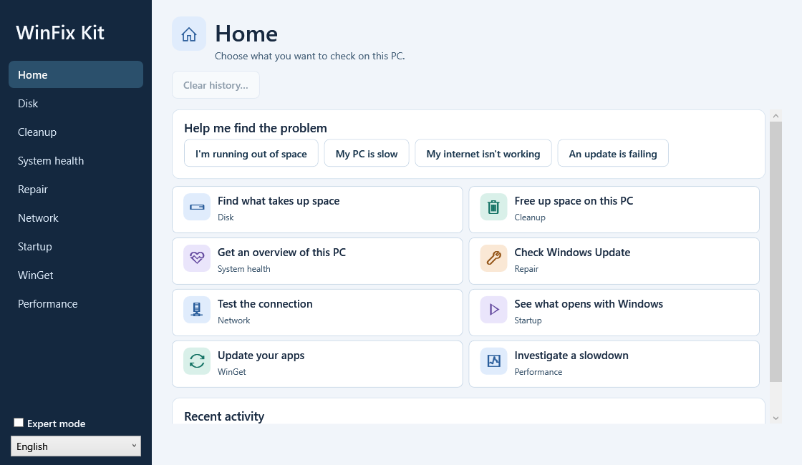

Disk Space Analyzer
Find large files and folders and export the list to HTML or CSV.
THE COMPLETE WINDOWS APP
Troubleshoot your PC, step by step.
Choose the problem you’re having. Guided mode helps you understand the results and decide what to do. Expert mode gives you access to advanced settings.

Release in preparation
WinFix Kit 2.2.0 is packaged for Windows x64 in English and French. The public download link will appear here once the release is published.
For a specific task, download a tool on its own. Both features are also included in WinFix Kit.
Find large files and folders and export the list to HTML or CSV.
Get a local report on Windows, hardware and recent events.
Once the complete app is released, extract the entire ZIP into a folder and open WinFixKit.exe. On the home screen, choose the problem you want to investigate.
Report a website issue ↗Scripts are published on GitHub so you can inspect the code before running it.
Diagnostic tools avoid destructive changes. Repair actions are documented and explicit.
Tools are designed to keep collected information on your computer unless clearly stated otherwise.
WinFix Kit is free and open source. If a tool has helped you, you can buy me a coffee to support its development.
No obligation: using the project or reporting an issue already helps.